2110D10 differential inner case - r + r with manual gearbox removed - includes gearbox dismantle and rebuild
- Path
- Procedures > 21 GEARBOX > 2110 MANUAL GEARBOX AND DIFFERENTIAL > 2110D manual gearbox differential > 2110D10 differential inner case - r + r with manual gearbox removed - includes gearbox dismantle and rebuild
- Kind
- repair procedure (removal / refitting; the operation number is the code)
- Applies to
- engines: 1.6 TS , 1.8 TS, 2.0 JTS, 2.5 V6, 3.2 V6, 1.9 JTD 8v , 2.0 JTS, 2.4 JTD 10v; all production periods
- Interactive page
- https://sloeber94.github.io/elrnDB-a156/en/#/3237963
Applies to: engines: 2.5 V6, 3.2 V6; all production periods
Applies to: engines: 1.6 TS , 1.8 TS, 2.0 JTS, 2.0 JTS; production: da 04/98 a 02/99
 Dismantling
Dismantling
 Reassembling
Reassembling1. Release the gearbox and differential (1a) from the hydraulic jack (1b) and the tool (1c) used for removing-refitting it from the vehicle.
 | Name | Country |
|---|---|---|
1c | Supports | 1.820.623.000 |
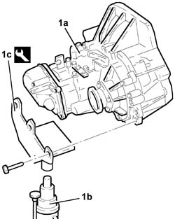
Applies to: engines: 1.6 TS , 1.8 TS, 2.0 JTS, 2.0 JTS; production: da 04/98 a 02/99
1. Undo the bolts (1a) and remove the coaxial clutch operating cylinder (1b).
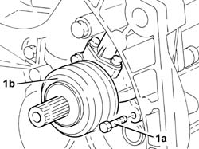
Applies to: engines: 1.6 TS , 1.8 TS, 2.0 JTS, 2.0 JTS; production: da 04/98 a 02/99
1. Fit the gearbox and differential (1a) on the overhaul stand using the tool (1b).
| Name | Country |
|---|---|---|
1b | Mount | 1.820.146.000 |
2. Undo the bolt (2a) and remove the speedometer idler gear (2b).
3. Undo the bolts (3a) and remove the rear cover (3b).
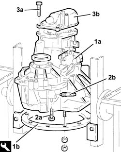
Applies to: engines: 1.6 TS , 1.8 TS, 2.0 JTS, 2.0 JTS; production: da 04/98 a 02/99
1. Undo the bolts (1a) and remove the gear selector/engagement mounting bracket (1b).
1. Remove the left internal differential driveshaft (2a) using tools (2b) and (2c).
| Name | Country |
|---|---|---|
2b | Flange | 1.820.229.000 |
| Name | Country |
|---|---|---|
2c | Counter weight | 1.821.161.000 |
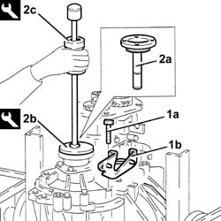
Applies to: engines: 1.6 TS , 1.8 TS, 2.0 JTS, 2.0 JTS; production: da 04/98 a 02/99
Engage 5 th speed pressing the selector fork on the main shaft.
Engage any gear using the gear selector/engagement lever.
1. Undo the 5 th speed selector fork bolt.
2. Remove the staking and loosen the ring nuts for the main and layshafts.
Place the 5 th speed selector fork in neutral.
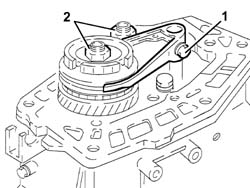
Applies to: engines: 1.6 TS , 1.8 TS, 2.0 JTS, 2.0 JTS; production: da 04/98 a 02/99
1. Completely undo the ring nuts for the main and layshafts.
2. Remove the 5 th speed driven gear.
3. Remove the 5 th speed synchronizer roller and spring retaining flange.
4. Remove the 5 th speed selector fork.
5. Remove the 5 th speed sliding sleeve.
6. Remove the springs (6a) and rollers (6b) for the 5 th speed hub.
7. Remove the 5 th speed sliding sleeve hub.
8. Remove the 5 th speed synchronizer ring.
9. Remove the 5 th speed drive gear.
10. Remove the needle bearing for the 5 th speed drive gear.
11. Remove the 5 th speed drive gear bush.
12. Undo the bolt (12a) and remove the plate (12b) retaining the main and layshaft rear bearings.
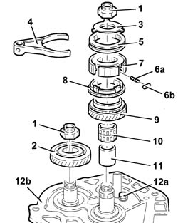
Applies to: engines: 1.6 TS , 1.8 TS, 2.0 JTS, 2.0 JTS; production: da 04/98 a 02/99
1. Remove the main and layshaft rear bearing circlips.
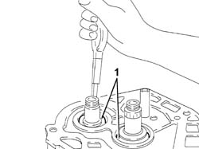
Applies to: engines: 1.6 TS , 1.8 TS, 2.0 JTS, 2.0 JTS; production: da 04/98 a 02/99
Undo the bolt fixing the Reverse gear shaft.
Undo the bolts and remove the differential flange complete with oil seals, O-Rings and scraper ring.
1. Undo the bolts fixing the gearbox casing to the bell housing.
2. Position the gear selector/engagement lever downwards.
3. Remove the gearbox casing using two screwdrivers in the special projections.
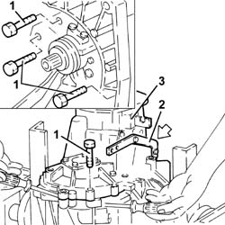
Applies to: engines: 1.6 TS , 1.8 TS, 2.0 JTS, 2.0 JTS; production: da 04/98 a 02/99
1. Remove the differential internal housing.
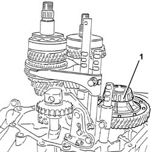
Applies to: engines: 1.6 TS , 1.8 TS, 2.0 JTS, 2.0 JTS; production: da 04/98 a 02/99
Reassembling
DismantlingFit the differential internal housing
Position all the gear selector forks in neutral.
Apply sealant to the contact surfaces between the bell housing and the gearbox casing.
 | Type | Component | Name | Qty. |
|---|---|---|---|---|
- | Sealant | GEARBOX SEALS/GASKETS | Loctite 573 | - |
Fit the gearbox casing on the bell housing.
Tighten the bolts fixing the gearbox casing to torque.
 | Fastening | Component | Ø | Value (daNm) |
|---|---|---|---|---|
- | Bolt | GEARBOX GEAR CASING | M8 | 2.1 - 2.6 |
Tighten the reverse shaft bolt to torque.
| Fastening | Component | Ø | Value (daNm) |
|---|---|---|---|---|
- | Bolt | REVERSE IDLER | M8 | 2.9 - 3.6 |
Fit the main and layshaft rear bearing circlips.
Apply sealant to the contact surfaces between the gearbox casing and the main and layshaft rear bearing retaining plate.
| Type | Component | Name | Qty. |
|---|---|---|---|---|
- | Sealant | GEARBOX SEALS/GASKETS | Loctite 573 | - |
Fit the main and layshaft rear bearing retaining plate and fix it tightening the bolt to torque.
| Fastening | Component | Ø | Value (daNm) |
|---|---|---|---|---|
- | Bolt | Main and layshaft rear bearing retaining plate.... | M8 | 2.1 - 2.6 |
1. Fit the 5 th speed drive gear bush.
2. Fit the needle bearing for the 5 th speed drive gear.
3. Fit the 5 th speed drive gear.
4. Fit the 5 th speed synchronizer gear.
5. Fit the 5 th speed sliding sleeve hub.
6. Fit the 5 th speed sliding sleeve.
7. Fit the springs (7a) and rollers (7b) for the 5 th speed sliding sleeve hub.
8. Fit the 5 th speed selector fork.
9. Fit the 5 th speed synchronizer spring and roller retaining flange.
10. Fit the 5 th speed driven gear.
11. Tighten the new ring nuts for the main and layshafts to torque.
| Fastening | Component | Ø | Value (daNm) |
|---|---|---|---|---|
- | Ring nut | GEAR SHAFTS | M20 | 10 - 12.4 |
12. Tighten the bolt for the 5 th speed selector fork to torque.
| Fastening | Component | Ø | Value (daNm) |
|---|---|---|---|---|
- | Bolt | 5thª speed selector fork | M6 | 1.5 - 1.9 |
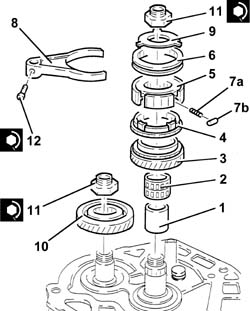
Applies to: engines: 1.6 TS , 1.8 TS, 2.0 JTS, 2.0 JTS; production: da 04/98 a 02/99
Apply sealant to the contact surfaces between the main and layshaft rear bearing retaining plate and the rear cover.
| Type | Component | Name | Qty. |
|---|---|---|---|---|
- | Sealant | GEARBOX SEALS/GASKETS | Loctite 573 | - |
1. Fit the rear cover (1a) and fix it tightening the bolts (1b) to torque.
| Fastening | Component | Ø | Value (daNm) |
|---|---|---|---|---|
1b | Bolt | GEARBOX REAR COVER | M8 | 2.1 - 2.6 |
2. Fit the speedometer idler gear (2a) and fix it using the bolt (2b).
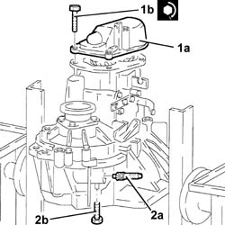
Applies to: engines: 1.6 TS , 1.8 TS, 2.0 JTS, 2.0 JTS; production: da 04/98 a 02/99
Place the gearbox side differential flange complete with a new oil seal back in its housing and secure it using the bolts.
1. Position the tool, complete with dial gauge, on the surface of the engine side differential and zero the dial gauge with a pre-loading of 1 mm.
| Name | Country |
|---|---|---|
1 | Dial gauge mounting | 1.820.085.000 |
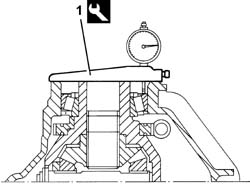
Applies to: engines: 1.6 TS , 1.8 TS, 2.0 JTS, 2.0 JTS; production: da 04/98 a 02/99
1. Position the tool (1a), complete with dial gauge, on the differential flange, engine side (1b) and measure the difference.
| Name | Country |
|---|---|---|
1 | Dial gauge mounting | 1.820.085.000 |
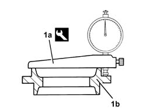
Applies to: engines: 1.6 TS , 1.8 TS, 2.0 JTS, 2.0 JTS; production: da 04/98 a 02/99
Calculate the size of the scraper ring for pre-loading the differential bearings adding 0.12 mm to the difference measured.
1. Place in the housing the adjustment shim or shims for pre-loading the differential bearings, of the size calculated or the next size up.
Place the differential flange complete with new oil seal back in its housing and secure it using the bolts.
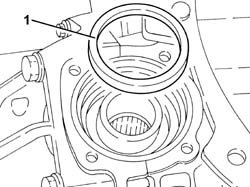
Applies to: engines: 1.6 TS , 1.8 TS, 2.0 JTS, 2.0 JTS; production: da 04/98 a 02/99
Fit the gear selector/engagement mounting bracket and fix it using the bolts.
Fit the left differential internal driveshaft.
Fit the coaxial clutch operating cylinder and secure using the bolts.
Undo the fixings and remove the gearbox and differential from the tool.
| Name | Country |
|---|---|---|
- | Mount | 1.820.146.000 |
Remove the tool supporting the overhaul stand and put it back.
Position the gearbox and differential on the tool used for the removing-refitting from the vehicle.
| Name | Country |
|---|---|---|
- | Supports | 1.820.623.000 |
Applies to: engines: 3.2 V6, 1.9 JTD 8v , 2.4 JTD 10v; production: da 02/00 a 01/01
Topics linked from this page (2)
- 2110B20 manual gearbox (5 speed) with differential - dismantle and rebuild - wash and check parts - replace synchronisers and internal controls if necessary
- 2110B26 manual gearbox (six speed) with differential - dismantle and rebuild wash and check parts - replace synchronizers and internal parts if necessary